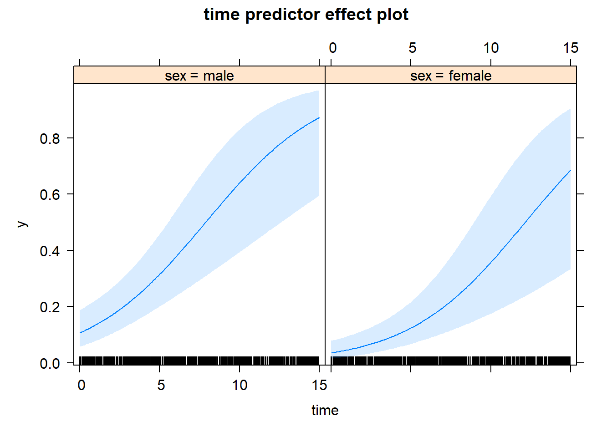

Capítulo 7 Modelos con respuesta no normal
En este capítulo veremos los modelos estadísticos para analizar medidas repetidas cuando la variable respuesta no es normal. En concreto, nos centraremos sobretodo cuando la variable respuesta es binaria: sí/no, caso/control, evento/no evento, … No se estudiará el caso de tener eventos censurados de estudios de cohorte o de seguimiento.
En cuanto a los modelos de regresión que veremos serán:
Modelos lineales generalizados mixtos (GLMM)
Generalized Estimation Equations (GEE).
7.1 Distribución de la variable respuesta
Cuando se habla “generalizado”, se entienden toda una familia de distribuiones entre las cuales se incluyen la Binomial (o binaria), la Poisson (propia de contajes) y también la distribución Normal, entre otras.
No incluye la distribución de Weibull (propia de análisis de supervivencia). Tampoco veremos extensiones como la censura, truncamiento o inflación en el cero.
7.1.1 Distribución Binomial
\[Y \sim B(n, p), \quad P(Y=k) = \begin{pmatrix} n \\ k \end{pmatrix} p^k (1-p)^{n-k}\]
Donde \(n\) es el número de ensayos y \(p\) es la probabilidad del éxito en cada ensayo.
Cuando \(n\)=1 tenemos la distribución de Bernoulli.
La regresión logística es el modelo que para predecir respuesta Bernoulli o Binomial, donde la relación entre las variables independientes y el valor esperado de la variable respuesta es la función logística (link canónico).
\[g(E(Y))=\text{logit}(p) = \log\left(\frac{p}{1-p}\right) = \beta_0 + \sum_{k=1}^K \beta_k x_k\] donde \(g\) es la función link que en el caso de la regresión logística corresponde a la función logit.
El término \(\frac{p}{1-p}\) se conoce como el odds del evento. De aquí se deriva que \(e^{\beta_k}\) sea el Odds Ratio de la variable \(x_k\).
En la regresión logística, para obtener las predicciones o valor esperado:
\[E(Y) = p = \frac{1}{1+\text{exp} \left(-(\beta_0 + \sum_{k=1}^K \beta_k x_k)\right)}\]
7.1.2 Distribución Poisson
\[Y \sim \text{Pois}(\lambda), \quad P(Y=k) = \frac{\lambda^k e^{-\lambda}}{k!}\] Donde \(\lambda\) es la incidencia o riesgo y coincide con la esperanza.
La regresión log-lineal es el modelo asociado a la distribución de Poisson que asocia la \(\lambda\) con las variables independientes mediante el link logarítmico (link canónico).
\[\log(\lambda) = \beta_0 + \sum_{k=1}^K \beta_k x_k\] De aquí que \(e^{\beta_k}\) es el riesgo relativo de la variable \(x_k\).
La función link para la regresión log-lineal de Poisson es el función logarítmica.
Para la regresión log-lineal de Poisson, las predicciones se obtienen como:
\[E(Y) = \lambda = \exp \left( \beta_0 + \sum_{k=1}^K \beta_k x_k \right)\]
7.2 Modelos lineales generalizados mixtos
7.2.1 Ecuación
Los modelos lineales generalizados mixtos, Generalized Linear Mixed Models (GLMM), son una generalización de los modelos lineales para respuesta dentro de la família exponencial.
Cuando la respuesta no es normal la ecuación del modelo es
\[g(E(y_{ij} | x_{ijk},\color{blue}{\beta_{0i},\cdots,\beta_{Ki}})) = \beta_{0i} + \sum_{k=1}^K \beta_{ki} x_{ijk}\] Donde \(g\) es la función link.
Fíjate que la ecuación es muy similar a lo de los modelos LMM. Sin embargo las diferencias son importantes:
A la izquierda de la igualdad no hay la variable respuesta, \(Y\), sino el link del valor esperado, \(\text{link}(E(y_{ij}))\).
A la derecha del igual no aparecen los errores. Por lo tanto no habrá matriz de correlaciones de los residuos.
Como en los LMM, \(\beta_{01}\) es la constante aleatoria y \(\beta_{ki}\) son las pendientes o coeficientes aleatorios. El vector formado por la constante y pendientes aleatorios son los efectos aleatorios y también siguen una distribución normal:
\[\vec{\beta}_i = (\beta_{0i},\beta_{1i},\ldots,\beta_{Ki})^t \sim N(\vec{\beta}, \Omega), \quad \forall i\]
7.2.2 Predicciones
Existen dos tipus de predicciones que serán diferentes:
- Las predicciones en el valor esperado de los efectos aleatorios, o sea en un “individuo promedio”
- para regresión logística
\[E(y_{ij}|x_{ijk}, \color{blue}{\beta_0,\cdots,\beta_K}) = \frac{1}{1+\text{exp} \left(-(\color{blue}{\beta_{0}} + \sum_{k=1}^K \color{blue}{\beta_{k}} x_{ijk}) \right)}\] - para regresión log-lineal de Poisson
\[E(y_{ij}|x_{ijk}, \color{blue}{\beta_0,\cdots,\beta_K}) = \text{exp} \left(\color{blue}{\beta_{0}} + \sum_{k=1}^K \color{blue}{\beta_{k}} x_{ijk} \right)\]
- Las predicciones promedio o marginales
- para regresión logística
\[E(y_{ij}|x_{ijk}) = \int_{-\infty}^{-\infty} \cdots \int_{-\infty}^{-\infty} \frac{1}{1+\text{exp} \left(-(\color{blue}{\beta_{0i}} + \sum_{k=1}^K \color{blue}{\beta_{ki}} x_{ijk}) \right)} \phi(\beta_{0i},\ldots,\beta_{Ki})\]
- para regresión logística
\[E(y_{ij}|x_{ijk}) = \int_{-\infty}^{-\infty} \cdots \int_{-\infty}^{-\infty} \text{exp} \left(\color{blue}{\beta_{0i}} + \sum_{k=1}^K \color{blue}{\beta_{ki}} x_{ijk} \right) \phi(\beta_{0i},\ldots,\beta_{Ki})\]
Donde \(\phi()\) es la función de densidad multivariante de los efectos aleatorios. Esta predicción es computacionalmente mucho más difícil de calcular ya que requiere de integración múltiple y require de métodos numéricos intensivos.
Interpretación de los OR/RR
Supongamos un modelo con una sola variable independiente (sexo), y en que se considera la constante aleatoria:
\[g(E(y_{ij}|x_{i},\beta_{0i})) = \beta_{0i} + \beta_1 x_i\] donde \(x_i\) puede tomar valores de 0 (hombre) o 1 (mujer).
El Odds Ratio (OR) o el Riesgo Relativo (RR) de la variable \(x\) para la regresión logística o para la regresión log-lineal de Poisson respectivamente son
\[\text{RR ó OR} = \frac{e^{\beta_{0\color{blue}{i}} + \beta_1}}{e^{\beta_{0\color{red}{j}}}} = e^{\beta_{0i}-\beta_{0j}} e^{\beta_1}\]
Fíjate que las constante aleatoria \(\beta_{0i}\) es distinto en el numerador que en denominador ya que el individuo está anidado a la variable sexo cada individuo es de una categoría de sexo pero no puede ser de ambas.
Luego el RR o el OR depende de los efectos aleatorio de la constante. Si tomamos el valor esperado del RR o del OR:
\[E(\text{RR ó OR}) = e^{\beta_1}\cdot E\left(e^{\beta_{0i}-\beta_{0j}}\right) = e^{\beta_1}\cdot \color{blue}{e^{\sigma_{\beta_{0}}^2}} \]
ya que \(\beta_{0i}-\beta_{0j} \sim N\left(0, 2\sigma_{\beta_{0}}^2\right)\).
Por lo tanto, cuanta más variabilidad haya entre individuos (\(\sigma_{\beta_{0}}^2\)), mayor es la discrepancia entre \(e^{\beta_1}\) el OR (ó RR) marginal.
Nota que para la regresión lineal los efectos aleatorios se cancelan: \(E(y|mujeres)-E(y|hombres) = \beta_1 + E(\beta_{0i})-E(\beta_{0j}) = \beta_1 + \beta_{0}-\beta_{0} = \beta_1\).
Pero cuando el link no es lineal ésto no sucede y la interpretación del efecto marginal de una variable depende de la varianza de los efectos aleatorios.
7.2.3 Función glmer
Una de las funciones más conocidas para analizar los datos mediante modelos GLMM para respuesta no normal es la función glmer del paquete lme4.
Esta paquete tiene la función lmer para ajustar modelos LMM. Su sintaxis es similar a lme. No obstante no permite modelizar la matriz de correlaciones de los residuos.
Los argumentos que tiene la función glmer, entre otros:
formula: para especificar tanto los efectos fijos como los efectos aleatorios.family: para especificar la distribución de la variable respuesta.
library(lme4)
?glmerLa diferencia importante respecto a lme es que no hay un argumento separado para especificar los términos fijos y los aleatorios; los términos aleatorios se especifican dentro del argumento formula:
+ (1 | sujeto)para la constante aleatoria
+ (var1 + var2 +...+ var3 | sujeto)Par constante y pendientes aleatorios.
Otra diferencia es que no existe el argumento correlation, ya que no hay matriz de correlación de los residuos en estos modelos generalizados (respuesta no normal).
Para especificar que no hay correlación entre los efectos aleatorios
+ (1 | sujeto) + (0 + var1 | sujeto) + (0 + var2 | sujeto) + (0 + var3 | sujeto)ó equivalentemente
+ (var1 + var2 + var3 || sujeto)Otro argumento específico en esta función glmer que no estaba en la función lme es el argumento family:
binomial,binomial()ó"binomial": para regresión logísticapoisson,poisson()ó"poisson": para regresión log-lineal de poisson
Al argumento weights de la función glmer, a diferencia de la función lme, hay que pasarle un vector numérico con tantas componentes como observaciones. Por lo tanto, este vector contiene literlmente los pesos que se le quiere dar a cada observación, y no hay necesidad de usar ninguna función intermedia (varident, varPower, …) como pasaba con lme.
glmer(..., weights = pesos, ...)7.2.4 Función mixed_model
Una alternativa a glmer es la función mixed_model del paquete GLMMadaptive.
Los argumentos mixed_model son los mismos que lme excepto que no tiene el argumento correlation, ya que, al igual que pasa con glmer no se pueden especificar la correlación de los errores.
Como en la función lme se especifican los efectos fijos y los aleatorios con los argumentos fixed y random, respectivamente, y de la misma forma.
Al igual que ocurre con la función glmer, para especificar que no hay correlación entre los efectos aleatoorios se especifica con ||
random = ~ tiempo || indivComparado con la función glmer, las implementaciones nuevas son:
método robusto para calcular los errores estándar de las estimaciones de los coeficientes fijos.
calcula el intervalo de confianza también de las varianzas de los efectos aleatorios.
estima predicciones promedio y también los Odds Ratios o Riesgos Relativos marginales
usa un método más completo de optimización.
La función mixed_model también tiene implementado el argumento weights. Pero es diferente de la función lme y de la función glmer. Para mixed_model hay que pasarle un vector con tantas componentes como individuos. Así pues, lo que hace mixed_model es ponderar todas las observaciones de un individuo de la misma manera (pondera los individuos en lugar de las observacioens).
library(GLMMadaptive)
?mixed_model7.2.5 Ejemplo
Para ilustrar la función mixed_model y también la función glmer, cogemos unos datos simulados (véase la vignette del package GLMMadaptive).
help(package="GLMMadaptive")Ahora no nos tendremos que preocupar de especificar bien la matriz de correlaciones de los errores, y sólo de los efectos aleatorios.
set.seed(1234)
n <- 100 # number of subjects
K <- 8 # number of measurements per subject
t_max <- 15 # maximum follow-up time
# we constuct a data frame with the design:
# everyone has a baseline measurment, and then measurements at random follow-up times
DF <- data.frame(id = rep(seq_len(n), each = K),
time = c(replicate(n, c(0, sort(runif(K - 1, 0, t_max))))),
sex = rep(gl(2, n/2, labels = c("male", "female")), each = K))
# design matrices for the fixed and random effects
X <- model.matrix(~ sex * time, data = DF)
Z <- model.matrix(~ time, data = DF)
betas <- c(-2.13, -0.25, 0.24, -0.05) # fixed effects coefficients
D11 <- 0.48 # variance of random intercepts
D22 <- 0.1 # variance of random slopes
# we simulate random effects
b <- cbind(rnorm(n, sd = sqrt(D11)), rnorm(n, sd = sqrt(D22)))
# linear predictor
eta_y <- as.vector(X %*% betas + rowSums(Z * b[DF$id, ]))
# we simulate binary longitudinal data
DF$y <- rbinom(n * K, 1, plogis(eta_y))DT::datatable(DF)Uso de la función glmer
###################
library(lme4)
modelo1.glmer <- glmer(formula = y ~ sex * time + (time | id),
data = DF,
family = binomial)
summary(modelo1.glmer) # quizá no converge...Generalized linear mixed model fit by maximum likelihood (Laplace
Approximation) [glmerMod]
Family: binomial ( logit )
Formula: y ~ sex * time + (time | id)
Data: DF
AIC BIC logLik deviance df.resid
737.4 770.2 -361.7 723.4 793
Scaled residuals:
Min 1Q Median 3Q Max
-2.4321 -0.3856 -0.2495 0.2682 5.6186
Random effects:
Groups Name Variance Std.Dev. Corr
id (Intercept) 0.30005 0.5478
time 0.05274 0.2297 1.00
Number of obs: 800, groups: id, 100
Fixed effects:
Estimate Std. Error z value Pr(>|z|)
(Intercept) -2.006281 0.277957 -7.218 5.28e-13 ***
sexfemale -1.161754 0.445313 -2.609 0.00908 **
time 0.253460 0.050181 5.051 4.40e-07 ***
sexfemale:time 0.003337 0.071668 0.047 0.96286
---
Signif. codes: 0 '***' 0.001 '**' 0.01 '*' 0.05 '.' 0.1 ' ' 1
Correlation of Fixed Effects:
(Intr) sexfml time
sexfemale -0.561
time -0.407 0.227
sexfemal:tm 0.256 -0.467 -0.689
optimizer (Nelder_Mead) convergence code: 0 (OK)
boundary (singular) fit: see help('isSingular')## sin correlación entre los efectos aleatorios
modelo2.glmer <- glmer(formula = y ~ sex*time + (1 | id) + (0 + time | id),
data = DF,
family = binomial)
summary(modelo2.glmer)Generalized linear mixed model fit by maximum likelihood (Laplace
Approximation) [glmerMod]
Family: binomial ( logit )
Formula: y ~ sex * time + (1 | id) + (0 + time | id)
Data: DF
AIC BIC logLik deviance df.resid
736.8 765.0 -362.4 724.8 794
Scaled residuals:
Min 1Q Median 3Q Max
-2.1926 -0.3595 -0.2348 0.2528 4.2005
Random effects:
Groups Name Variance Std.Dev.
id (Intercept) 0.93315 0.9660
id.1 time 0.07655 0.2767
Number of obs: 800, groups: id, 100
Fixed effects:
Estimate Std. Error z value Pr(>|z|)
(Intercept) -2.129111 0.341967 -6.226 4.78e-10 ***
sexfemale -1.180758 0.488406 -2.418 0.0156 *
time 0.268665 0.059755 4.496 6.92e-06 ***
sexfemale:time 0.001354 0.082590 0.016 0.9869
---
Signif. codes: 0 '***' 0.001 '**' 0.01 '*' 0.05 '.' 0.1 ' ' 1
Correlation of Fixed Effects:
(Intr) sexfml time
sexfemale -0.500
time -0.556 0.278
sexfemal:tm 0.298 -0.550 -0.668# o bien
modelo2b.glmer <- glmer(formula = y ~ sex*time + (time || id),
data = DF,
family = binomial)
summary(modelo2b.glmer)Generalized linear mixed model fit by maximum likelihood (Laplace
Approximation) [glmerMod]
Family: binomial ( logit )
Formula: y ~ sex * time + (time || id)
Data: DF
AIC BIC logLik deviance df.resid
736.8 765.0 -362.4 724.8 794
Scaled residuals:
Min 1Q Median 3Q Max
-2.1926 -0.3595 -0.2348 0.2528 4.2005
Random effects:
Groups Name Variance Std.Dev.
id (Intercept) 0.93315 0.9660
id.1 time 0.07655 0.2767
Number of obs: 800, groups: id, 100
Fixed effects:
Estimate Std. Error z value Pr(>|z|)
(Intercept) -2.129111 0.341967 -6.226 4.78e-10 ***
sexfemale -1.180758 0.488406 -2.418 0.0156 *
time 0.268665 0.059755 4.496 6.92e-06 ***
sexfemale:time 0.001354 0.082590 0.016 0.9869
---
Signif. codes: 0 '***' 0.001 '**' 0.01 '*' 0.05 '.' 0.1 ' ' 1
Correlation of Fixed Effects:
(Intr) sexfml time
sexfemale -0.500
time -0.556 0.278
sexfemal:tm 0.298 -0.550 -0.668# sólo la constante aleatoria
modelo3.glmer <- glmer(formula = y ~ sex*time + (1 | id),
data = DF,
family = binomial)
summary(modelo3.glmer)Generalized linear mixed model fit by maximum likelihood (Laplace
Approximation) [glmerMod]
Family: binomial ( logit )
Formula: y ~ sex * time + (1 | id)
Data: DF
AIC BIC logLik deviance df.resid
762.7 786.1 -376.4 752.7 795
Scaled residuals:
Min 1Q Median 3Q Max
-2.7974 -0.4510 -0.1705 0.3872 9.6837
Random effects:
Groups Name Variance Std.Dev.
id (Intercept) 4.038 2.009
Number of obs: 800, groups: id, 100
Fixed effects:
Estimate Std. Error z value Pr(>|z|)
(Intercept) -2.60968 0.43910 -5.943 2.79e-09 ***
sexfemale -1.31596 0.63367 -2.077 0.0378 *
time 0.28432 0.03944 7.209 5.64e-13 ***
sexfemale:time 0.03976 0.05413 0.735 0.4626
---
Signif. codes: 0 '***' 0.001 '**' 0.01 '*' 0.05 '.' 0.1 ' ' 1
Correlation of Fixed Effects:
(Intr) sexfml time
sexfemale -0.612
time -0.665 0.374
sexfemal:tm 0.415 -0.679 -0.654# vemos cuál es mejor
anova(modelo1.glmer, modelo2.glmer, modelo3.glmer)Data: DF
Models:
modelo3.glmer: y ~ sex * time + (1 | id)
modelo2.glmer: y ~ sex * time + (1 | id) + (0 + time | id)
modelo1.glmer: y ~ sex * time + (time | id)
npar AIC BIC logLik deviance Chisq Df
modelo3.glmer 5 762.71 786.13 -376.36 752.71
modelo2.glmer 6 736.84 764.95 -362.42 724.84 27.8677 1
modelo1.glmer 7 737.42 770.22 -361.71 723.42 1.4202 1
Pr(>Chisq)
modelo3.glmer
modelo2.glmer 1.299e-07 ***
modelo1.glmer 0.2334
---
Signif. codes: 0 '***' 0.001 '**' 0.01 '*' 0.05 '.' 0.1 ' ' 1No hay diferencias entre el modelo 1 y el 2. Elegimos el modelo 2 que es más simple.
- Estimación de los efectos fijos e IC de las varianzas
# efectos fijos (beta0, beta1)
fixef(modelo2.glmer) (Intercept) sexfemale time sexfemale:time
-2.12911112 -1.18075771 0.26866464 0.00135373 # IC de los efectos fijos
# parm = c(3:4) ya que hay 4 coeficientes fijos elijo dos
confint(modelo2.glmer, parm = c(3:4)) 2.5 % 97.5 %
(Intercept) -2.879777 -1.5223834
sexfemale -2.182534 -0.2371725- Varianzas y covarianzas de los efectos aleatorios
VarCorr(modelo2.glmer) Groups Name Std.Dev.
id (Intercept) 0.96600
id.1 time 0.27667 - Score tests de los parámetros
summary(modelo2.glmer)Generalized linear mixed model fit by maximum likelihood (Laplace
Approximation) [glmerMod]
Family: binomial ( logit )
Formula: y ~ sex * time + (1 | id) + (0 + time | id)
Data: DF
AIC BIC logLik deviance df.resid
736.8 765.0 -362.4 724.8 794
Scaled residuals:
Min 1Q Median 3Q Max
-2.1926 -0.3595 -0.2348 0.2528 4.2005
Random effects:
Groups Name Variance Std.Dev.
id (Intercept) 0.93315 0.9660
id.1 time 0.07655 0.2767
Number of obs: 800, groups: id, 100
Fixed effects:
Estimate Std. Error z value Pr(>|z|)
(Intercept) -2.129111 0.341967 -6.226 4.78e-10 ***
sexfemale -1.180758 0.488406 -2.418 0.0156 *
time 0.268665 0.059755 4.496 6.92e-06 ***
sexfemale:time 0.001354 0.082590 0.016 0.9869
---
Signif. codes: 0 '***' 0.001 '**' 0.01 '*' 0.05 '.' 0.1 ' ' 1
Correlation of Fixed Effects:
(Intr) sexfml time
sexfemale -0.500
time -0.556 0.278
sexfemal:tm 0.298 -0.550 -0.668- Predicciones
Para las siguientes combinaciones de las variables:
newd <- expand.grid(time=seq(0,15,5), sex=c("male","female"), id=1)
newd time sex id
1 0 male 1
2 5 male 1
3 10 male 1
4 15 male 1
5 0 female 1
6 5 female 1
7 10 female 1
8 15 female 1predict(modelo2.glmer, newd, type="response") 1 2 3 4 5 6
0.05099257 0.11218050 0.22906790 0.41132167 0.01623058 0.03759196
7 8
0.08464839 0.17961529 - Gráfico de predicciones
library(ggeffects)
pr.random <- ggpredict(modelo2.glmer, c("time [all]","sex"), type="random")
pr.random# Predicted probabilities of y
# sex = male
time | Predicted | 95% CI
--------------------------------
0.00 | 0.11 | [0.01, 0.49]
2.94 | 0.21 | [0.03, 0.67]
5.17 | 0.32 | [0.06, 0.79]
7.68 | 0.48 | [0.10, 0.88]
10.03 | 0.64 | [0.16, 0.94]
14.98 | 0.87 | [0.36, 0.99]
# sex = female
time | Predicted | 95% CI
--------------------------------
0.00 | 0.04 | [0.00, 0.24]
2.94 | 0.07 | [0.01, 0.39]
5.17 | 0.13 | [0.02, 0.54]
7.68 | 0.23 | [0.03, 0.70]
10.03 | 0.35 | [0.06, 0.83]
14.98 | 0.68 | [0.16, 0.96]
Adjusted for:
* id = 0 (population-level)pr.fixed <- ggpredict(modelo2.glmer, c("time [all]","sex"), type="fixed")
pr.fixed# Predicted probabilities of y
# sex = male
time | Predicted | 95% CI
--------------------------------
0.00 | 0.11 | [0.06, 0.19]
2.94 | 0.21 | [0.13, 0.31]
5.17 | 0.32 | [0.21, 0.47]
7.68 | 0.48 | [0.30, 0.67]
10.03 | 0.64 | [0.40, 0.82]
14.98 | 0.87 | [0.60, 0.97]
# sex = female
time | Predicted | 95% CI
--------------------------------
0.00 | 0.04 | [0.02, 0.08]
2.94 | 0.07 | [0.04, 0.14]
5.17 | 0.13 | [0.07, 0.22]
7.68 | 0.23 | [0.12, 0.38]
10.03 | 0.35 | [0.18, 0.58]
14.98 | 0.68 | [0.33, 0.90]
Adjusted for:
* id = 0 (population-level)library(gridExtra)
grid.arrange(
plot(pr.random) + ggtitle("random"),
plot(pr.fixed) + ggtitle("fixed"),
nrow=1, ncol=2)Usando la función mixed_model
El modelo escogido usando el glmer se ajustaría con la siguiente sintaxis:
library(GLMMadaptive)
modelo2.mixed <- mixed_model(fixed = y ~ sex*time,
random = ~ time || id,
data = DF,
family = binomial)
summary(modelo2.mixed)
Call:
mixed_model(fixed = y ~ sex * time, random = ~time || id, data = DF,
family = binomial)
Data Descriptives:
Number of Observations: 800
Number of Groups: 100
Model:
family: binomial
link: logit
Fit statistics:
log.Lik AIC BIC
-359.4719 730.9439 746.5749
Random effects covariance matrix:
StdDev
(Intercept) 0.9705
time 0.2910
Fixed effects:
Estimate Std.Err z-value p-value
(Intercept) -2.1282 0.3399 -6.2604 < 1e-04
sexfemale -1.1903 0.4937 -2.4109 0.015915
time 0.2701 0.0611 4.4183 < 1e-04
sexfemale:time 0.0031 0.0848 0.0371 0.970435
Integration:
method: adaptive Gauss-Hermite quadrature rule
quadrature points: 11
Optimization:
method: hybrid EM and quasi-Newton
converged: TRUE - efectos condicionales e intervalos de confianza
confint(modelo2.mixed) 2.5 % Estimate 97.5 %
(Intercept) -2.7944495 -2.128177211 -1.4619049
sexfemale -2.1579607 -1.190288979 -0.2226173
time 0.1502626 0.270061739 0.3898609
sexfemale:time -0.1631059 0.003143801 0.1693935- efectos marginales e intervalos de confianza
marginal_coefs(modelo2.mixed, std_errors = TRUE) Estimate Std.Err z-value p-value
(Intercept) -1.5846 0.2558 -6.1937 < 1e-04
sexfemale -1.0912 0.3769 -2.8957 0.0037835
time 0.1738 0.0302 5.7456 < 1e-04
sexfemale:time 0.0516 0.0434 1.1874 0.2350639- Estimación de las varianzas de los efectos aleatorios con sus intervalos de confianza
confint(modelo2.mixed, parm = "var-cov") 2.5 % Estimate 97.5 %
var.(Intercept) 0.2271032 0.94180306 3.9056830
var.time 0.0448401 0.08469908 0.1599893- Predicciones
Para las siguientes combinaciones de las variables:
newd <- expand.grid(time=seq(0,15,5), sex=c("male","female"))
newd time sex
1 0 male
2 5 male
3 10 male
4 15 male
5 0 female
6 5 female
7 10 female
8 15 femalepredict(modelo2.mixed, newd, type = "marginal") 1 2 3 4 5 6
0.17014959 0.32836686 0.53827642 0.73543836 0.06441622 0.17525201
7 8
0.39606205 0.66930686 predict(modelo2.mixed, newd, type = "mean_subject") 1 2 3 4 5 6
0.10638816 0.31477945 0.63932604 0.87244465 0.03494309 0.12428771
7 8
0.35745881 0.68559754 y con los errores estándar (del predictor lineal).
predict(modelo2.mixed, newd, type = "marginal", se.fit=TRUE)$pred
1 2 3 4 5 6
0.17014959 0.32836686 0.53827642 0.73543836 0.06441622 0.17525201
7 8
0.39606205 0.66930686
$se.fit
1 2 3 4 5 6
0.2558341 0.1980894 0.2424415 0.3522307 0.3249897 0.2098850
7 8
0.2067862 0.3189744 predict(modelo2.mixed, newd, type = "mean_subject", se.fit=TRUE)$pred
1 2 3 4 5 6
0.10638816 0.31477945 0.63932604 0.87244465 0.03494309 0.12428771
7 8
0.35745881 0.68559754
$se.fit
1 2 3 4 5 6
0.3399411 0.3099182 0.5131671 0.7857693 0.4358726 0.3421853
7 8
0.4913996 0.7504220 library("effects")
plot(predictorEffect("time", modelo2.mixed), type = "response")
Para el modelo ajustado con mixed_model, las funciones summary, confint, predict y marginal_coefs, tiene el argumento sandwich=TRUE con el que los errores estándar se calculan mediante el método sandwich (más robusto). Sin embargo, sólo funciona si el modelo tiene sólo la constante aleatoria.
7.3 Generalized Estimation Equations
7.3.1 Ecuación
Los modelo GEE (“Generalized Estimation Equations”), se basan en la primera derivada de la función de verosimilitud, y encontrar los parámetros que igualen esta derivada a cero.
Es importante remarcar que no se basan propiamente en la función de verosimilitud. Por lo tanto, no se podrán realizar contrastes de LRT para comparar modelos anidados ni obtener los índices AIC ni BIC.
En su lugar, sí que se pueden calcular los QIC (“quasi-likelihood information criteria”) para comparar modelos.
7.3.2 Función geeglm
Para ajustar los modelos GEE usaremos la función geeglm del package geepack, el cual es una extensión del paquete gee. El valor añadio de geepack es que aporta la función QIC (“quasi-likelihood information criteria”) que permite comparar modelos para escojer entre matrices de correlación de los errores.
Las posibles matrices de correlación (“working matrices”) son:
- “independence”
- “exchangeable”
- “ar1”
- “unstructured”
- “userdefined”
El argumento weights de la función geeglm tiene el mismo significado y funcionamiento que en la función glmer, o sea que es un vector de pesos para cada observación.
7.3.3 Ejemplos
Fíjate en el argumento waves.
library(geepack)
modelo2.gee <- geeglm(formula = y ~ sex*time,
id = id,
waves = time,
corstr = "ar1",
family = binomial(),
std.err = "san.se", #default; others: 'jack', 'j1s', 'fij'
data = DF)
summary(modelo2.gee)
Call:
geeglm(formula = y ~ sex * time, family = binomial(), data = DF,
id = id, waves = time, corstr = "ar1", std.err = "san.se")
Coefficients:
Estimate Std.err Wald Pr(>|W|)
(Intercept) -1.48199 0.24155 37.643 8.50e-10 ***
sexfemale -1.10837 0.36403 9.271 0.00233 **
time 0.15915 0.02656 35.900 2.08e-09 ***
sexfemale:time 0.05526 0.03923 1.985 0.15891
---
Signif. codes: 0 '***' 0.001 '**' 0.01 '*' 0.05 '.' 0.1 ' ' 1
Correlation structure = ar1
Estimated Scale Parameters:
Estimate Std.err
(Intercept) 1.004 0.1171
Link = identity
Estimated Correlation Parameters:
Estimate Std.err
alpha 0.9936 0.001097
Number of clusters: 100 Maximum cluster size: 8 anova(modelo2.gee)Analysis of 'Wald statistic' Table
Model: binomial, link: logit
Response: y
Terms added sequentially (first to last)
Df X2 P(>|Chi|)
sex 1 3.0 0.085 .
time 1 86.6 <2e-16 ***
sex:time 1 2.0 0.159
---
Signif. codes: 0 '***' 0.001 '**' 0.01 '*' 0.05 '.' 0.1 ' ' 1QIC(modelo2.gee) QIC QICu Quasi Lik CIC params QICC
918.317 919.327 -455.663 3.495 4.000 918.393 Por defecto, los errores estándard se calculan mediante el método sandwich. Otra posibilidad es usar el método jacknife.
Comparamos los resultados de los coeficientes fijos con la función glmer, mixed_model (modelos mixtos) y la función geeglm (GEE):
coef(summary(modelo2.glmer)) Estimate Std. Error z value Pr(>|z|)
(Intercept) -2.129111 0.34197 -6.22606 4.783e-10
sexfemale -1.180758 0.48841 -2.41758 1.562e-02
time 0.268665 0.05976 4.49607 6.922e-06
sexfemale:time 0.001354 0.08259 0.01639 9.869e-01coef(summary(modelo2.mixed)) Estimate Std.Err z-value p-value
(Intercept) -2.128177 0.33994 -6.26043 3.839e-10
sexfemale -1.190289 0.49372 -2.41086 1.591e-02
time 0.270062 0.06112 4.41832 9.947e-06
sexfemale:time 0.003144 0.08482 0.03706 9.704e-01marginal_coefs(modelo2.mixed, std_errors = TRUE) Estimate Std.Err z-value p-value
(Intercept) -1.5846 0.2558 -6.194 <1e-04
sexfemale -1.0912 0.3769 -2.896 0.0038
time 0.1738 0.0302 5.746 <1e-04
sexfemale:time 0.0516 0.0434 1.187 0.2351coef(summary(modelo2.gee)) Estimate Std.err Wald Pr(>|W|)
(Intercept) -1.48199 0.24155 37.643 8.496e-10
sexfemale -1.10837 0.36403 9.271 2.329e-03
time 0.15915 0.02656 35.900 2.077e-09
sexfemale:time 0.05526 0.03923 1.985 1.589e-017.4 Ejercicios
7.4.1 Ejercicio 5b
Analiza los datos toenail disponible en el package HSAUR3. En ellos hay la información de un estudio para comparar dos fármacos sobre la evolución de una infección.
library(HSAUR3)
?toenailAnaliza cómo cambia el riesgo de paceder una infección moderada o severa (“moderate or severe”) a lo largo de las visitas y según el tratamiento. Empieza por visualizar los datos y hacer una descriptiva. Después, para contestar a la pregunta científica, prueba de usar tanto las funciones para ajustar los modelos GLMM como para los modelos GEE.